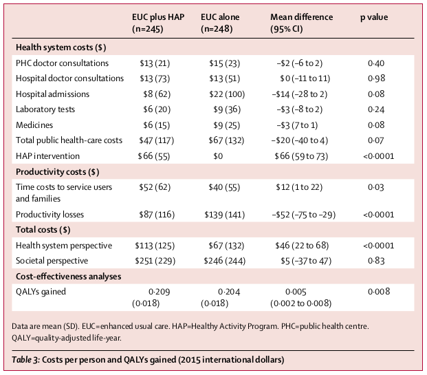

<?xml version="1.0" encoding="UTF-8"?>
<table title="table3" id="table3" class="tabcontent" xmlns="http://www.w3.org/1999/xhtml">
 <tr>
  <td>
   
   <p>../../cm-ucl/corpus-oa-pmr-v02/10.1016_S0140-6736(16)31589-6/tables/table3/table.png</p>
  </td>
  <td>
   <table class="table">
    <caption/>
    <tr>
     <th class="cell">^{Healthsystemcosts($)} ^{PHCdoctorconsultations} _{Hospitaldoctorconsultations} _{Hospitaladmissions} _{Laboratorytests} _{Medicines} _{Totalpublichealth-carecosts} _{HAPintervention} _{Productivitycosts($)} _{Timecoststoserviceusers} ^{andfamilies} ^{Productivitylosses} _{Totalcosts($)} _{Healthsystemperspective} _{Societalperspective} _{Cost-effectivenessanalyses} QALYsgained _{Dataaremean(SD).EUC=enhancedusualcare.HAP=HealthyActivityProgram.PHC=publichealthcentre.} _{QALY=quality-adjustedlife-year.} _{Table3:CostsperpersonandQALYsgained(2015internationaldollars)} </th>
     <th class="cell">^{$13(21)} _{$13(73)} _{$8(62)} _{$6(20)} _{$6(15)} _{$47(117)} _{$66(55)} _{$52(62)} ^{$87(116)} _{$113(125)} _{$251(229)} 0·209 ^{(0·018)} </th>
     <th class="cell">^{$15(23)} _{$13(51)} _{$22(100)} _{$9(36)} _{$9(25)} _{$67(132)} _{$0} _{$40(55)} ^{$139(141)} _{$67(132)} _{$246(244)} 0·204 ^{(0·018)} </th>
     <th class="cell">^{–$2(–6to2)} _{$0(–11to11)} _{–$14(–28to2)} _{–$3(–8to2)} _{–$3(7to1)} _{–$20(–40to4)} _{$66(59to73)} _{$12(1to22)} ^{–$52(–75to–29)} _{$46(22to68)} _{$5(–37to47)} 0·005 ^{(0·002to0·008)} </th>
     <th class="cell">^{0·40} _{0·98} _{0·08} _{0·24} _{0·08} _{0·07} _{&lt;0·0001} _{0·03} ^{&lt;0·0001} _{&lt;0·0001} _{0·83} 0·008 </th>
    </tr>
   </table>
   <p>../../cm-ucl/corpus-oa-pmr-v02/10.1016_S0140-6736(16)31589-6/tables/table3/table.svg.html</p>
  </td>
 </tr>
</table>
